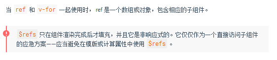
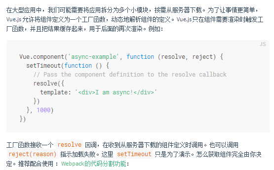
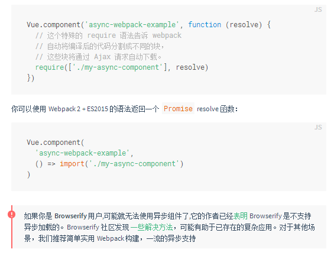
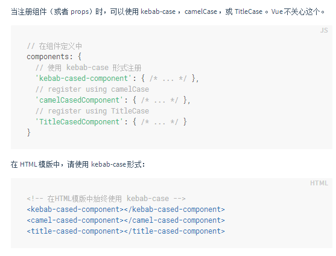
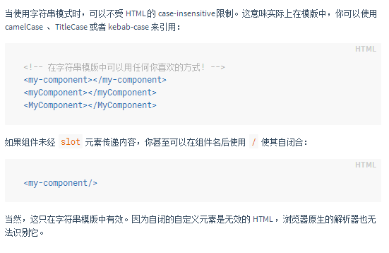
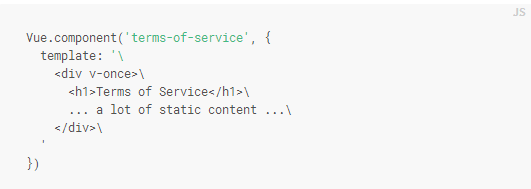

尽管有 props 和 events ，但是有时仍然需要在 JavaScript 中直接访问子组件。为此可以使用 ref 为子组件指定一个索引 ID 。例如：

待学习，结合webpack




待定！！！！！！！！！！！！！！！！！
如果子组件有 inline-template 特性，组件将把它的内容当作它的模板，而不是把它当作分发内容。这让模板更灵活:
These are compiled as the component's own template.
Not parent's transclusion content.
简单来说，虽然子组件中没有slot，但是父组件（父tempalte）有inline-template这个属性，所以相当于优先级高了！“我”被显示出来了
但是子组件中的内容被去除了：counter
但是 inline-template 让模板的作用域难以理解。最佳实践是使用 template 选项在组件内定义模板或者在 .vue 文件中使用 template 元素。
还有种X-Template的方式也可以定义模板，但不提倡
#对低开销的静态组件使用v-once
template本质就是一静态字符串，vue需对其进行渲染，当template含有大量静态资源时，可考虑进行缓存，如：
